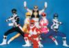

De: La Frikipedia, la enciclopedia extremadamente seria.
De: La Frikipedia, la enciclopedia extremadamente seria. De: La Frikipedia, la enciclopedia extremadamente seria.
| De la serie empresas malignas: | ||
| Ikariam | ||
| ||
| Perteneciente al grupo: | Plagiators | |
| Se dedica a: | Plagiar otros juegos. | |
| País de origen: | Alemania o China, que como está por ahí lejos, le podemos echar las culpas. | |
| Año de fundación: | Tiene más años que El tío del sombrero. | |
| Super Presidente: | Un gilipollas con un pedo que no se aguantaba de pie, era como pa pegarle una patada en los cojones. | |
| Nivel de maldad: | A cualquiera que se acerque a calcularla le explotará la cabeza como a este tío. | |
| Empresas absorbidas: | Ya paso de contarlas; Travian está entre ellas, y dentro de poco Guil Wars. | |
| Número de empleados: | La hostia | |
| Atentados contra la humanidad | Bufffffffffff... Digamos que con Travian y el flash de los cojones ya basta. | |
| ¿Se aconseja trabajar aquí? | Claro que NO. Chuck Norris, santificado sea su nombre, y el gran Monstruo del Spaghetti volador, dejarán tan lelo y lila como éstos  al que lo recomiende | |
| ¿Se recomienda el boicot? | Bueeeenoo, un poco... demasiado mucho, a Vodafone y Orange, y Yoigo sobretodo, por eso están así de lelos. | |
| Cantidad de denuncias: | Por ahora ninguna. porque no se puede demostrar, tal como veis en maldad. | |
| Sitio web: | Página oficial de Ikariam | |
Ikariam fue creado allá por el año 300X junto con Bobobo y esos.
Es una copia barata de Travian, quien a su vez es una copia de Age of Empires, quien a su vez es una copia barata de las guerras... bueno, pues eso. Consiste en hacerte el tío más fuerte, lo cual es imposible ya que ese honor está reservado a unos pocos (los primeros de cada servidor). Parece que todo transcurre en la era de la civilización griega, aunque cosas tales como fusileros, gigantes a vapor y barcos lanzallamas nos hacen dudar de la cultura de sus creadores (sí, los mismos de OGame), de lo documentados que estaban y del pedo que llevaban el día que se les ocurrió.
Con unas materias primas indispensables (madera, pedruscos, vidrios, kalimotxo y azufre), tienes que construir edificios de épocas completamente distintas, mientras vigilas que los cabrones de los ciudadanos no te manguen el oro. Mientras tanto, creas tropas y barcos que pueden servir para muchas cosas:

Tíos que llevan jugando desde que se abrió el server (suelen ser los primeros) y que, además, han jugado en otros. Te envían recursos cuando fundas una colonia nueva cerca suyo y te dan consejos, útiles el 2% de las veces e inútiles el resto. A cambio, te piden que les des recursos. No suele haber más de 10 por server.(Jugadores: Strategos - Servidor Iota)
Son tan buenos como los otros. Conocen todo sobre el juego, pero lo usan para fines benéficos (benéficos para ellos, claro): osea, te atacan una o dos veces al día, depende de cuánto produzcas, y te dejan sin tropas ni recursos para hacerlas (también están en Ogame y en Travian).
Ni tú ni yo estamos en esta categoría: se conectan cuando pueden, construyen lo que pueden, en general, hacen lo que pueden. Son los primeros en ser atacados.
Se crean una cuenta por la novedad, pero desisten enseguida.
Tienen nombres como "soynuevo" o "x es gilipollas", y sus pueblos no son mancos: "nomeatakes", "notengonada"......
También están en Counter Strike, suelen tener el Ikariam PLUS, pero no atacan: crean millones de tropas defensivas y se encierran en sí mismos hasta que explotan y dejan un bujero negro.
Desde aquí explotas a los ciudadanos administras la ciudad y jodes haces más felices a sus habitantes al tiempo que piensas en dominar el mundo maneras de ganar oro (EBay)
Lugar de reflexión (tá lleno de espejos) donde los frikis más frikis de entre los frikis de tus habitantes piensan maneras de investigar berradas (probablemente como tenerla mas grande), hacer el vago y cobrar mucho. La academia es la meca de la sabiduría sobre las artes sexuales y del budú, donde el conocimiento arraigado en la tradición se funde con las más modernas técnicas, como el 69 o el cowboy invertido. ¡Las mentes más enfermas de tu ciudad esperan ser aceptadas a esta gran orgía de pruebas! Ten en consideración que cada investigador necesita una cama y condones, lo cual genera gastos. Cuanto más grande la academia, más investigadores y chicas puedes contratar.
Gimnasio donde entrenas a gente de tu pueblito para que la diñe en cuanto se acerque algún jugador del tipo agresivo. Gastas azufre y muebles de la abuela para crear tropas, a la vez que el oro que te cuesta pa darles la paga y el kalimotxo que necesitan.
Lugar desde donde no se cierran acuerdos comerciales y se crean los barquitos esos donde puedes llevar de todo (qué mierda si te tocase ir junto a los cerdos).
Desde allí se crean otros barquitos que duran menos que el dinero, ya que a las primeras de cambio se hunden.
Allí guardas las cosas de construcciones (los legos y los kanex y la merca/droga que consiguen cobrando muy poco la hora), asegurando un enorme 2% contra robo.
Cuatro piedras mal puestas hechas por aspañoles o por Pepe Gotera y Otilio, ya que, conforme más se amplía, más bujeros tiene.
La muralla protege a tus ciudadanos no solo del enemigo, sino también del sol y de tu mamá. ¡Debes estar alerta! Tus enemigos intentarán violar a tus ciudadanos realizar boquetes en tu muro o cacharte trepar sobre él. Cada nivel incrementa la resistencia de tu estúpida muralla.
Lugar más aclamado de Ikariam. Uno de los recursos más caros, el kalimotxo, pues en la época no había Coca-Cola
Luego de un día de arduo sexo trabajo no hay nada más reconfortante que un fresco jarro lleno de chele vino. Es por eso que los ciudadanos se reúnen en la taberna, para conseguir chicas fáciles y reproducirse. Cuando cae la noche y ya no quedan más canciones por cantar emprenden la vuelta serenos y alegres a sus hogares para hacerlo con sus esposas. Cada ampliación en tu taberna te permite servir más vino para que esos pendejos se emborrachen.
Esplendorosérrimo edificio donde uno se detiene a mirar chorradas del año de la pera. Por extraño que parezca, cambia el estado de ánimo de la gente.
Ampliarlo cuesta un güevo y parte del otro. Sirve para tener más pueblitos (no por Dios, otro pueblo noooooooooooooooooooo!!!!!!!!!!) con los que joder alegrar el día a la gente.
El hermano hijoputa del palacio. Hace falta tener uno por colonia, tan ampliado como colonias tienes.
Es desde donde se corrompe Ikariam cuando se declaran guerras. Edificio maldito por culpa del cual cada vez que te conectas a Ikariam ves la bandeja de entrada llena de correos circulares, porque nadie aprende a mandar mensajes personales.
Mirad las de OGame
lugar donde puedes comerciar tu hachís para que tus ciudadanos puedan drogarse. ademas atraera mas ciudadanos y si la amplias a nivel 78 todos los jugadores se borran y te conviertes en el mejor jugador del mundo, luego de esto Bill Gates, el Pato Donald, Chato Arismendi y Pepito Tuvieja llegan a tu casa con un trofeo gigante montado sobre un camion que contiene 30 mujeres de play boy, kichicientos millones de dolares en monedas de 20 centavos y en otro camion te traen 1900 esclavos chinos a tu disposicion para que los hagas trabajar de prostitutas y asi comprar ambrosia.
en este lugar puedes mejorar a tu ejercito con cosas como escudos de bronce y punteros de hierro en las botas de tus hoplitas para que puedan patear mas fuerte los cojones de tus enemigos.
Allí se forman los espías, que son la hostia si envías tú uno, pero una putada si descubres que te lo han enviado. ah y si pensabas que es un lugar donde alguien se esconde deberias ponerte una camisa de fuerza, abrigarte bien e irte al siquiatra maldito loco sicópata!!! Un sabio gobernante mantiene a sus prostitutas cerca y a sus enemigos aún más cerca. En el escondite puedes hacer orgías sin que nadie te descubra, alistar espías, quienes te brindarán información sobre otras ciudades y la cantidad de recursos que tienen. Un escondite espacioso puede alojar mas espías y hacer más orgías cómodamente.
Es semejante al burdel cuartel. En esta mierda de edificio suele ocurrir la magia por las noches ya que los mineros y leñadores cansados le dan bomba a las trolas d las ciudadanitas, estas que por 100 d oro te hacen servicio completo suelen estar vestidas d conejitas playboy pero al final son solo unas monstruosidades con 100 kg de grasa. Los leñadores le dan con el hacha y los investigadores le meten la lupa y las barbas de de chivo extasiado que tienen los viejos pedorros esos pero las muy cachondas no lo sienten hasta que una grua debe infiltrarse en su cavidad para desatorar a los pervertidos que trataron de penetrarlas y se perdieron (por eso se instalo un telefono en cada cavidad de las putas).
Los leñadores fuertes pueden penetrar incluso 2 veces más rápido. Pero ellos también saben que un bosque debe ser cultivado y nuevos árboles deben ser plantados, de modo que nosotros podamos seguir usando sólo los mejores bosques para nuestras camas. La producción de madera y condones es aumenta un 0.00000001% para cada nivel de extensión.
Es un bosque tan patetico que nunca se termina y los leñadores lo explotan hasta que "acaban" su arduo trabajo y deciden ir al puticlub donde vive Dios junto con sus odaliscas véase prostitutas baratas ciudadanitas. Aqui se sacan los putos palos que se usan para consolar al gobernador y al rey de Paysandu. La madera la usan para crear unas putas casitas que al fin y al cabo no te sirven de nada por que la madera es de tan mala calidad que cuando se termina el edificio este se derrumba y aplasta uno que otro ciudadanito y uno que otro travesti del burdel cuartel menos a los honderos que se comen los palos de una por que su boca se quedo gigantemente grande de tanto hacerle favorcitos a los investigadores. Allí trabajan los esclavos negros sin papeles.
Son los lugares de donde explotas de manera vil a tus ciudadanos haciendolos romperse el culo trabajando para conseguir tus recursos que despues de todo terminaran robandotelos. Còmo en el arressadero trabajan allí negros ilegales.
es lo que le da de comer al subnormal de mierda inadaptado que creo el juego ya que necesitas dinero para comprarla y asi tener mas opciones al jugar. algunas de estas opciones son : producir hachís en una plantacion por isla, puedes crear un edificio llamado "puticlub" donde tus ciudadanos pasan la noche dandole matraca a tus ciudadanitas y tambien puedes construir y ampliar varios edificios a la vez (cola de construccion de edificios).
 Empresas Empresas 
|
|---|
|
Bimbo $ Burger King $ Coca-Cola $ Duff $ Empresas pesqueras de Osaka $ KFC $ McDonald's $ Nocilla $ Oscar Mayer $ Pepsi $ Pizza Hut $ Starbucks 4Kids $ Air Madrid $ Audioskan $ Blizzard $ Compañía de tranvías da Coruña $ Correos $ Diario AS $ Diario GOL $ Discográfica $ El jueves $ Ikariam $ Marca $ Mundo Deportivo $ Playboy $ Vale Music $ Vitrasa CNN $ Canal Sur $ La 2 $ Luar $ Telerisa $ TV Azteca $ TVE $ Studio Basura $ Teleahinco $ Paka Paka $ Discovery Kids $ Disney XD $ Cuatroº ACME $ Agfa $ Akatsuki $ Bic $ BMW $ Bosque verde $ CLAMP $ Copyleft $ Godbusters $ ETT $ El MAL $ Fisher Price $ Ford $ Greenpeace $ Hombres de negro $ Horóscopo $ Hunosa $ Iglesia maradoniana $ KIEP $ Lego $ Mapfre $ MCC $ Oficina $ Organización XIII $ PDVSA $ RMC $ Ryanair $ Sanrio $ SWAT $ Umbrella $ VolBaguen $ WDC |
Autor(es):
{kind=link}